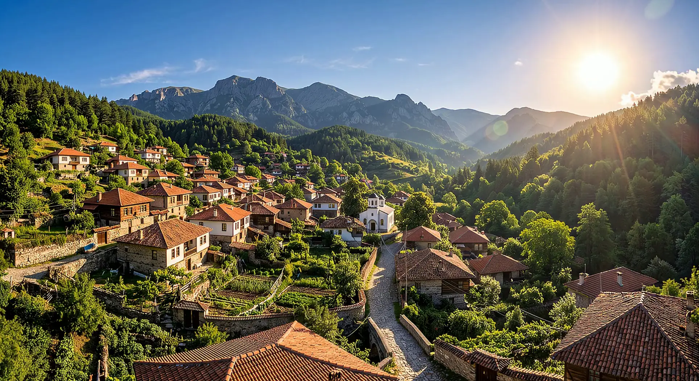
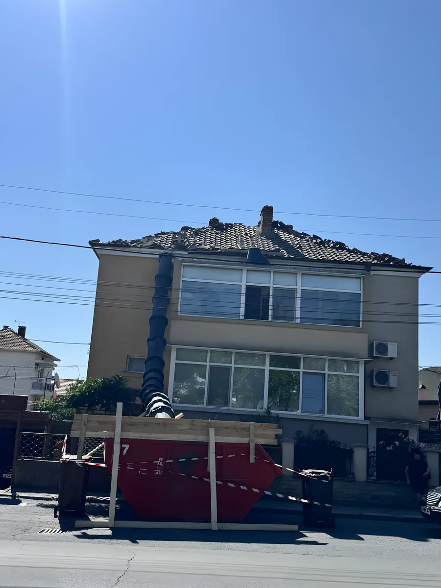
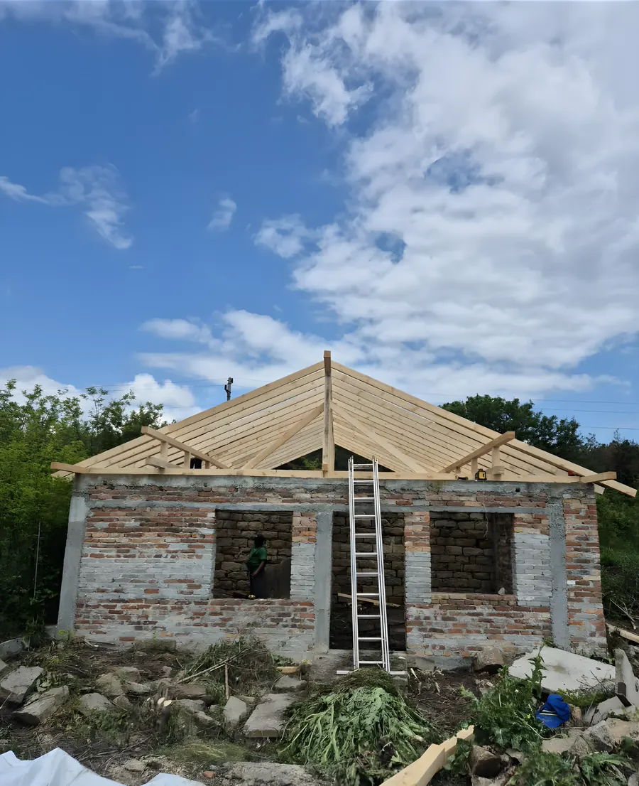
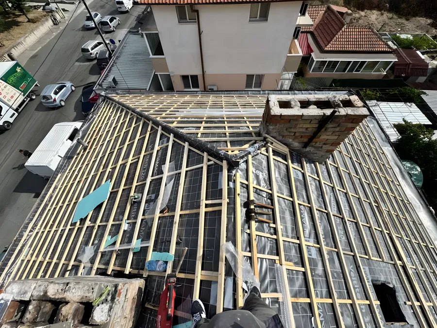
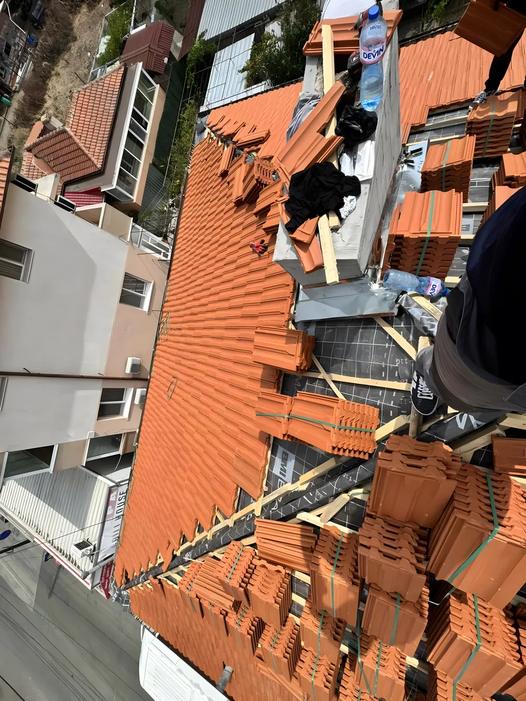
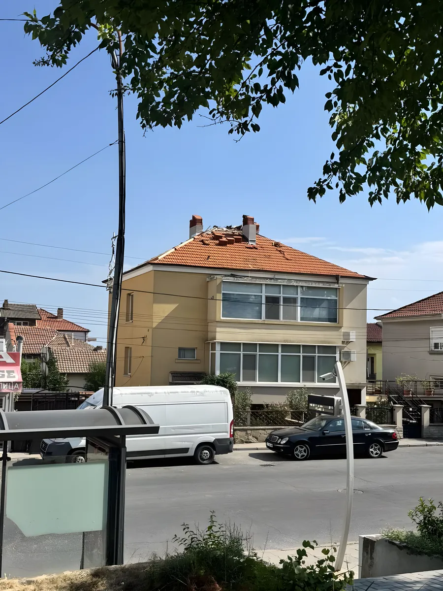
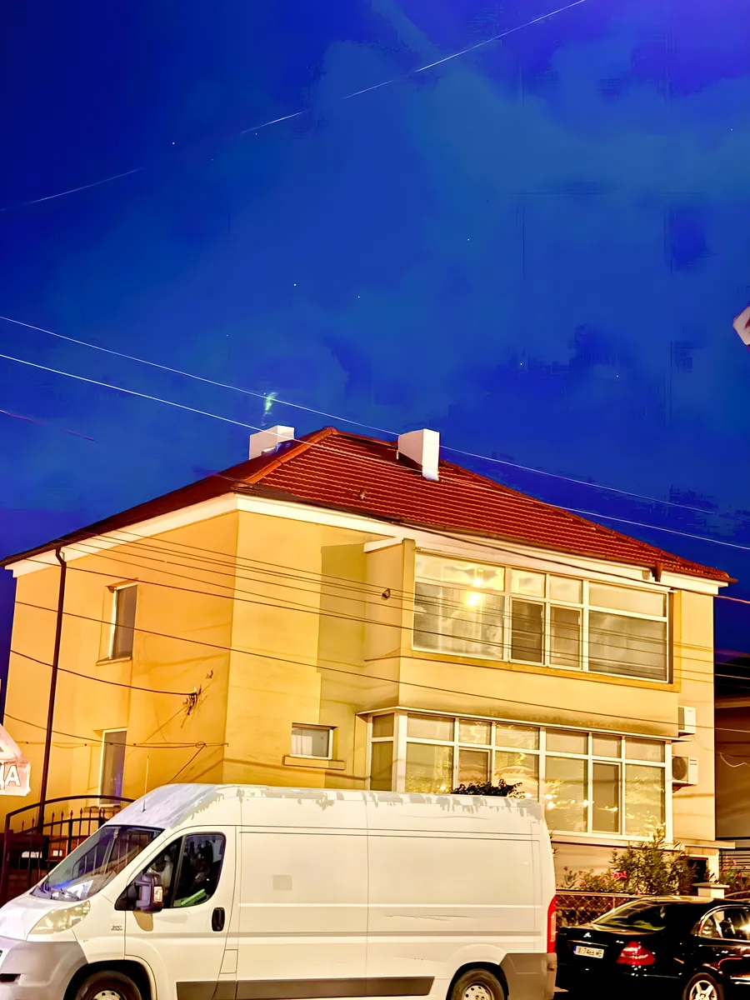

01 / Процесът
Пет стъпки до покрив, който държи.
Всеки покрив, който правим, минава през тези пет стъпки, в този ред, без прескачане. Долу вляво е снимката от обекта, вдясно е какво точно се прави.

От първия теч до последния ред керемиди. Поемаме покрива целия. Ремонти, нова конструкция, керемиди, хидроизолация, обшивки, улуци. Писмена гаранция, фиксирана цена след оглед.
Дъжд по цял ден. Нито капка вътре.
Паропропусклива мембрана лап върху лап, всеки ред керемиди застъпва двата предходни, комините с нова обшивка. Водата няма откъде да влезе.
Сняг до билото. Покривът държи.
Конструкция, оразмерена за планинския снеговалеж. Снегозадържачи и улуци, които не пускат лавина в двора, и била, които вятърът не вдига.
Виж как се сменят времето и сезоните.Помисли от какво се нуждае твоят покрив.ВИЖ ПО-ДОЛУ
Всеки покрив, който правим, минава през тези пет стъпки, в този ред, без прескачане. Долу вляво е снимката от обекта, вдясно е какво точно се прави.





Всичко долу е работа на нашия екип в последните месеци. Scroll встрани или дърпай с пръста на телефона.
Нова конструкция, PVC мембрана, керемиди Браас. Окото се спира на новия ъгъл на хипирания скат.
Няма машини, с които да скрият бавната работа. Всяка стара керемида слиза ръчно, във чувал, не на пода на улицата.
Мембраната Bramac Veltitech 120. Контралетвите на 60 см, летвите нарязани на точния gauge за керемидата.
Браас, Терран, Тондач, Кебе. Избираш марката и цвета, ние гарантираме монтажа. Всеки ред ковачи, не само лепило.
Същата сграда, същата улица. Разликата: нови били, нова ламарина около комините, нови улуци. Къщата изглежда с 15 години по-млада.
Ремонт и подновяване на всякакъв вид покриви с гаранция за качество.
Професионална хидроизолация за дълготрайна защита от вода и влага.
Монтаж и ремонт на улуци, ламарини и всички тенекеджийски работи.
Изграждане на веранди, навеси и беседки по индивидуален проект.
Вътрешно и външно шпакловане с висококачествени материали.
Всякакъв вид строително-ремонтни дейности, пълен пакет услуги.
Изработка и монтаж на дървени и метални конструкции по проект.
Зидарски работи, мазилка и довършителни строителни дейности.
Работим в цяла България и в Европа, идваме при вас навсякъде.
Казвам се Диян. Започнах да работя по покриви още като чирак при баща ми. От десет години имам свой екип, четирима души, всички с име и история. Няма проект, който минава през нас без аз да го видя.
Няма да ти обещая цената, преди да дойда и да я видя. Няма да ти пратя нов човек всеки път. И ако нещо не е наред след предаването, обаждаш се на същия номер, идвам пак.
Идваме, качваме се, снимаме, пращаме ти писмена оферта. Покриваме София, Пловдив, Варна, Бургас и големите градове между тях.
Или звънни на 0886 597 314
